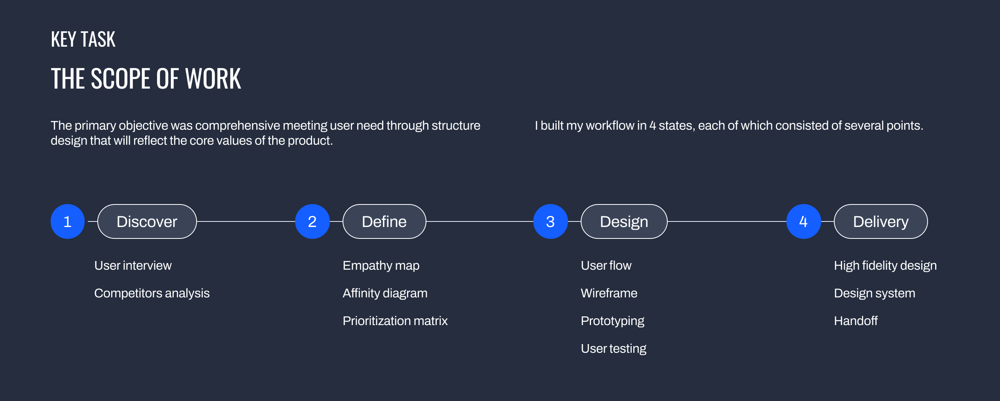
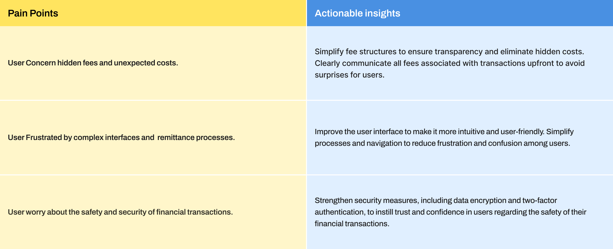
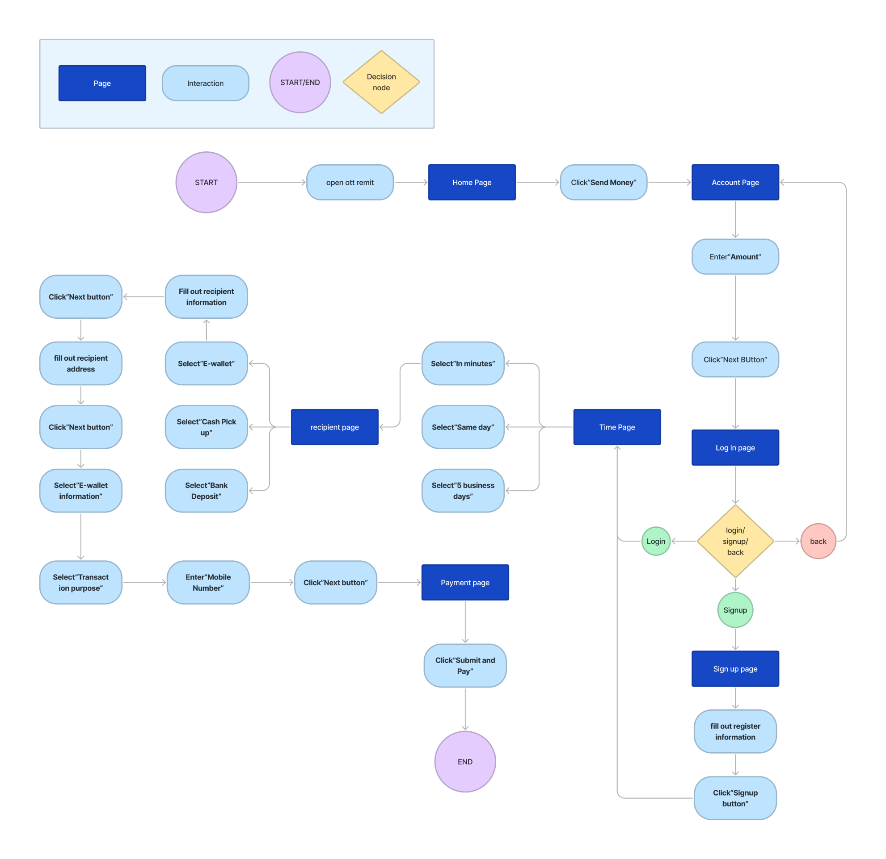
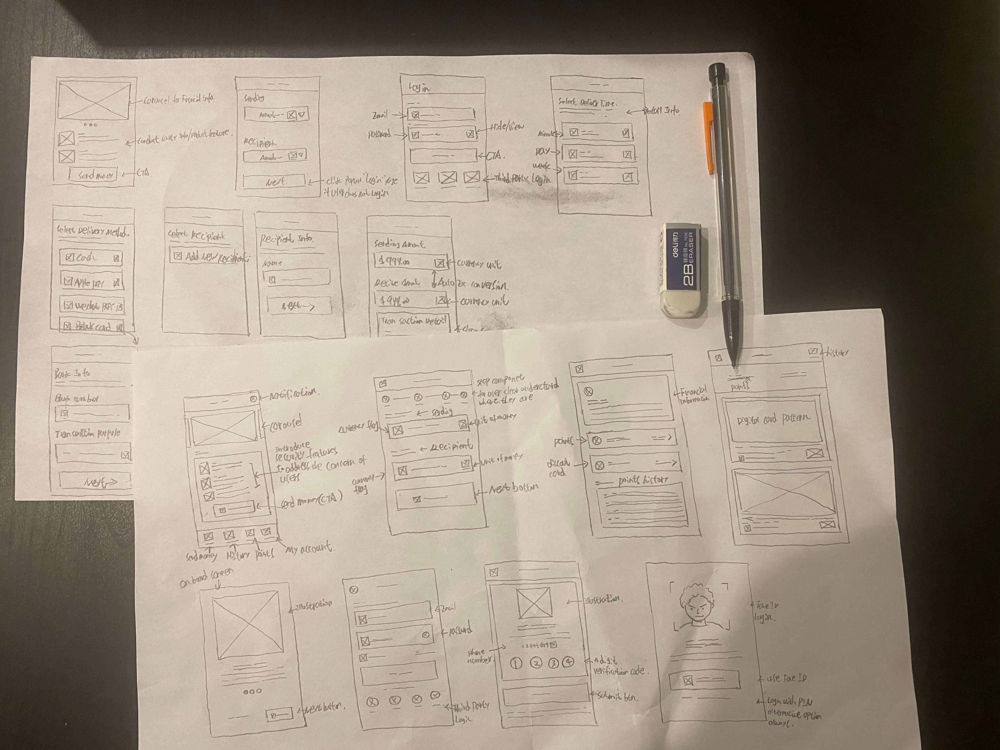
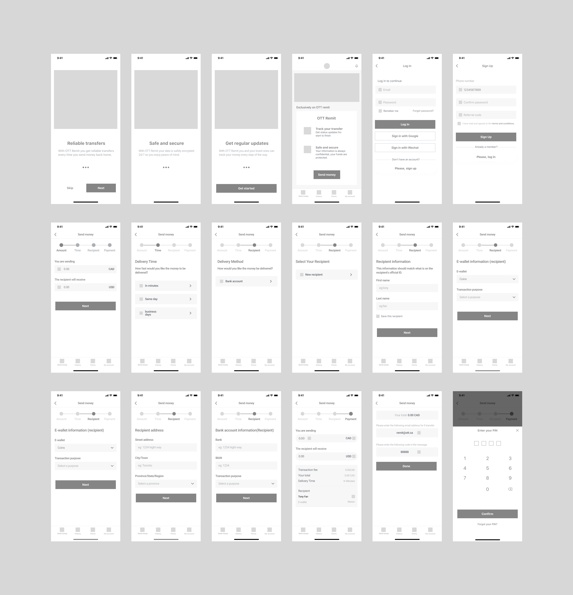
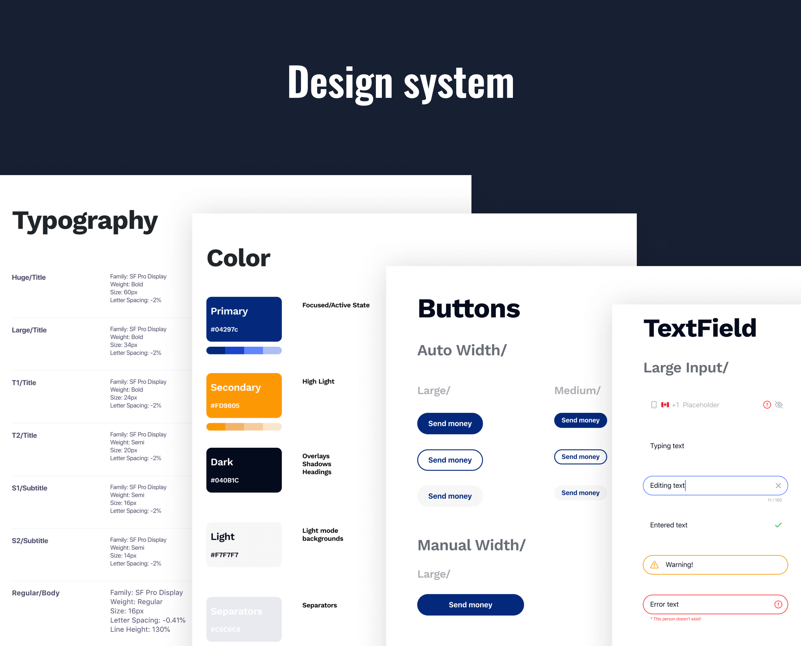
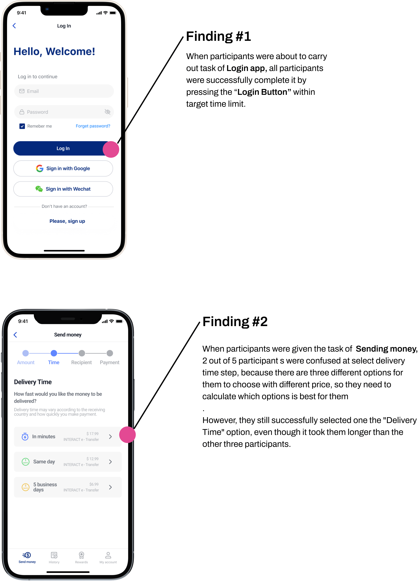

easy, fast, safe
cross-border currency
remittance APP
PROBLEM statement
- The complicated remittance process often leaves users feeling frustrated when attempting to make a transaction.
- The limited login options create a less user-friendly experience, potentially leading to frustration among users.
- Lacking effective user onboarding and product key features introduction pages that can help new users seamlessly use our app.
goal statement
- Aim to simplify the remittance process within our app, minimizing steps and providing clear instructions to alleviate user frustration.
- By introducing additional login methods such as biometric authentication and social media logins, we seek to enhance user convenience and satisfaction with our platform.
- create comprehensive onboarding materials, including tutorials and interactive guides, to help users quickly familiarize themselves with our app's features.

discover
cometitive analysis
This step aims to thoroughly examine the features, strengths, and weaknesses of existing competitors' offerings in order to identify industry trends, user preferences, and areas for innovation or improvement within the mobile remittance app market.

Simple and secure remittance
Make sending money straightforward and user-friendly, while also implementing strong security measures to protect users' sensitive financial information and transactions from unauthorized access or fraud, thereby enhancing user experience and trust in the platform.
Multiple authetication methods
Allows users to choose from various authentication options such as email/password, social media login, or biometric authentication, providing flexibility and convenience while ensuring enhanced security measures based on individual preferences and technological capabilities.

Informative onboarding process
Guide users smoothly through the initial setup, providing clear and comprehensive information about the app's features, benefits, and security measures to help users understand how to use the platform effectively and confidently initiate remittance transactions.
define
Empathize
For comprehensively understanding users' thoughts, emotions, and motivations. Through visual representation, I immerse myself in users' experiences, enabling me to empathize with their challenges and frustrations. This understanding fuels the design of solutions tailored to effectively address their needs, empowering me to craft experiences that deeply resonate with our target audience.
objective
- To understand users’s motivation for online remittance.
- To find out the user’s pain points and need they face while using OTT REMIT.
- To find out user experience in login, making remittance and redeem loyalty reward on our app.
define
Affinity diagram
At this stage, I synthesize the qualitative data from empathy map. By grouping related insights and observations into thematic clusters, I gain a deeper understanding of user needs and pain points, allowing me to prioritize design improvements that address their concerns effectively.
define
Prioritization matrix
At this stage, involving developers, product owner and team leader, we collectively assess each insight's impact, feasibility, and urgency. By collaboratively assigning scores to these criteria and weighting them based on our collective expertise and understanding, we ensure that design efforts align with both user needs and technical constraints while meeting business objectives.
Recommendations
Several actionable insights recommendatons were found to solve user problems.

design
User Flow
Through the research, we discovered that users were experiencing confusion and complicated remittance process. To address this, we have redesigned the process by incorporating a stepper component, allowing users to easily track the number of steps they have completed and easily navigate back if they get lost. This redesign improves the usability and user experience of the application.

design
Sketch
Based on the user flow, we mapped out the sequence of screens and interactions users will encounter while using the application. This allows us to efficiently brainstorm and refine the layout and functionality of each screen, ensuring they align with the intended user journey and identifying any usability issues early on in the design process.

design
Wireframe
Before creating mockups, a simple wireframe visually outline how users navigate the app for remittance, help designers and stakeholders in understanding user interactions and identifying improvement opportunities.

design
Design system
Before creating prototypes, it's essential to establish a design system. It provides guidelines for colors, typography, and components, ensuring consistency in the product's visual appearance.

design
Mockup
After completing the wireframe and system design phases, the mockup stage is where the visual design of the user interface starts to take shape. It's like adding color and detail to the basic blueprint provided by the wireframe. Mockups depict how the interface will look and feel to users, with graphical elements such as colors, fonts, images, and icons closely resembling the final product.
design
Usability testing
The final stage carried out in this project is to perform Usability Testing with participants.
The objectives of doing this UT are:
- User can successfully Login
- User can smoothly make remittance in the OTT Remit app
The approach used in the UT process is Moderated Usability Testing with Microsoft Teams, which involves meeting s with participants and allows researchers to give instructions, observe user interaction with the design in real time, and ask follow-up questions in the research’s session.
The participants taken at this test were the same as the participants in the depth interview, there were 5 users.
Test result
Several findings were found at after carrying out the Usability Testing process:

learnings
I learned the critical importance of effective time management in this project, given its tight timeframe, necessitating efficient management for idea testing, prototype design, and user feedback collection. Prior to research, I devised a detailed action plan with clearly defined stages, tasks, and deadlines, ensuring optimized scheduling for each step.
View more